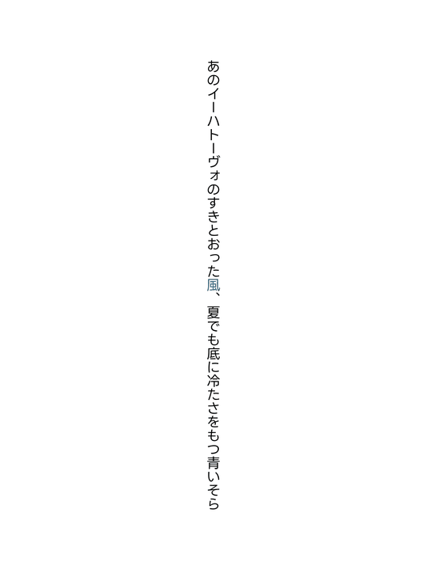

縦書き画像メーカー
横書き版
↗
プレビュー
1500 × 2000 px

画像のプレビュー
プレビューを準備しています
PNG画像を保存
文章を入力
本文
あのイーハトーヴォのすきとおった***風***、夏でも底に冷たさをもつ青いそら
＋ 詞書を挿入
＋ 色替え文字を挿入
プレビューを見る ↑
改行すると左に次の列ができます。
***
で囲んだ文字には強調色を使います。
タイトル・付記
任意
タイトル
左下の付記
右下の付記
フォント
LINESeedJP
M PLUS Rounded 1c
これはサンプル文章です。
ひな明朝
これはサンプル文章です。
しっぽり明朝
これはサンプル文章です。
さわらび明朝
これはサンプル文章です。
さわらびゴシック
これはサンプル文章です。
Noto Sans JP
これはサンプル文章です。
LINESeedJP
これはサンプル文章です。
Zen Antique
これはサンプル文章です。
Kiwi Maru
これはサンプル文章です。
Zen Kaku Gothic New
これはサンプル文章です。
Klee One
これはサンプル文章です。
Zen Kurenaido
これはサンプル文章です。
Hachi Maru Pop
これはサンプル文章です。
Kaisei Decol
これはサンプル文章です。
DotGothic16
これはサンプル文章です。
Stick
これはサンプル文章です。
RocknRoll One
これはサンプル文章です。
Yusei Magic
これはサンプル文章です。
Potta One
これはサンプル文章です。
Mochiy Pop One
これはサンプル文章です。
Dela Gothic One
これはサンプル文章です。
サイズ・配色
文字・画像・縁取り
文字のサイズ
小
中
大
特大
キャンバスサイズ
基本 1500 × 2000
正方形 2000 × 2000
スマホ壁紙 2000 × 4000
背景色
白
紺色
藍色
臙脂色
藤色
小豆色
桜色
桃色
鼠色
朱色
黒色
カラーピッカーで選択
文字色
白
紺色
藍色
臙脂色
藤色
小豆色
桜色
桃色
鼠色
朱色
黒色
カラーピッカーで選択
強調色（***で囲んだ文字）
白
紺色
藍色
臙脂色
藤色
小豆色
桜色
桃色
鼠色
朱色
黒色
カラーピッカーで選択
文字の縁取り
なし
白
黒
背景画像
アップロード・位置調整
画像ファイル
横位置（px）
縦位置（px）
拡大率（%）
角度（度）